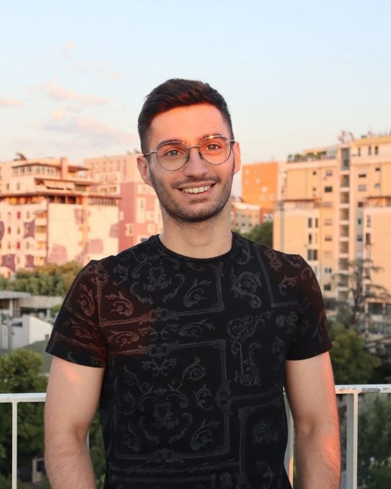

Dexterous manipulation
Multi-fingered robotic hands performing manipulation tasks that require coordinating many contacts at once, rather than a single grasp point.
robotics · real-time control · dexterous manipulation
PhD researcher at IDSIA USI-SUPSI, in the LEON Group. I work on dexterous manipulation with multi-fingered robotic hands, designing real-time control and learning-based strategies for compliant multi-contact interaction.
Research
Manipulation and interaction break down exactly where the robot meets an uncertain environment. My work sits on that boundary: controllers that stay real-time and stable through contact, and learning that makes them general.
Multi-fingered robotic hands performing manipulation tasks that require coordinating many contacts at once, rather than a single grasp point.
Compliance control that lets a robot share space and forces with people and objects safely, under contact conditions that are neither known in advance nor static.
Modular C++ controllers that meet hard real-time constraints on redundant and floating-base platforms — mobile manipulators, quadrupeds carrying arms, redundant manipulators.
Keeping teleoperated systems stable and usable when the channel is not: high latency and jitter of the kind lunar and space missions impose, and operator interfaces in mixed reality.
About
I am a PhD researcher in robotics at IDSIA USI-SUPSI, in the LEON Group, in Switzerland. My research is on dexterous manipulation with multi-fingered robotic hands: .
Before the PhD I spent about a year and a half as a robotics engineer on real hardware. At the Dynamic Legged Systems Lab of the Istituto Italiano di Tecnologia I built a modular whole-body controller for a quadruped carrying a redundant manipulator, and a real-time compliance controller for mixed-reality teleoperation. Before that, at the Automatic Control Group of the University of Salerno, I designed a ROS2 control framework for teleoperation under the latency and jitter conditions relevant to lunar and space missions, validated on Franka Emika Panda, UR10, and Husky A300 platforms.
A recurring part of that work was integration: defining the software interfaces between control, perception, and mixed-reality modules across several teams, then designing the experiments that show the whole system actually holds together on hardware. I care about the seam where clean control theory meets a robot that has to work in front of stakeholders.

Education
Experience
Apr 2026 — present
IDSIA USI-SUPSI · LEON Group
Nov 2025 — Mar 2026
Istituto Italiano di Tecnologia · Dynamic Legged Systems Lab
Nov 2024 — Nov 2025
University of Salerno · Automatic Control Group
Projects
Locomotion, navigation, and perception work with code on GitHub.
A data-driven control algorithm that combines model-based RL primitives, trained in PyTorch, into robust bipedal locomotion in MuJoCo while avoiding obstacles. Roughly 90% success on held-out simulation trials, with sustained locomotion beyond 20 s in most successful runs — a baseline controller could not complete the same tasks.
A ROS2 navigation stack for TurtleBot 4 using QR-code signposts and Nav2 planners, with an FSM-based global planner, kidnapping recovery, and dynamic cost-map updates. The QR detection pipeline stayed reliable up to 3 m in motion under varied lighting; validated in Gazebo and on hardware, ranking 1st in race time among student teams.
Fine-tuned existing models and designed neural networks for fire and smoke detection on embedded cameras, reaching 84.4% mean validation accuracy — 5.4 percentage points above the FireNet baseline.
Publications
arXiv:2608.19740 · 2026 arXiv ↗ Code & videos ↗
arXiv:2601.08514 · 2026 arXiv ↗
Contact
Working on dexterous manipulation? I would be glad to talk.